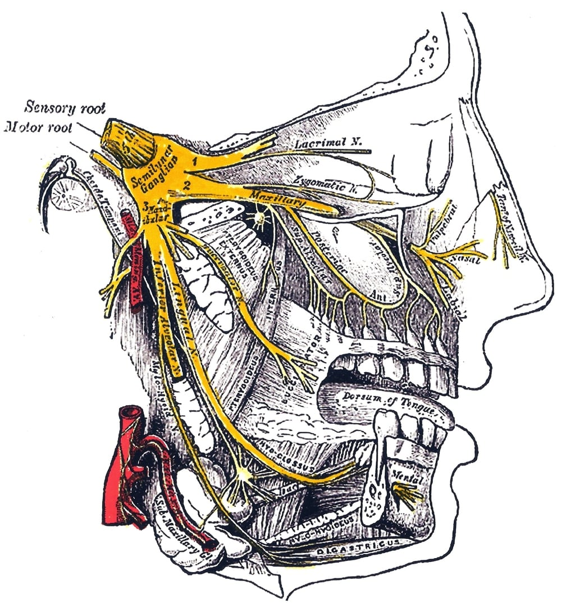

An illustration from Gray's Anatomy of the trigeminal nerve (a key culprit in the instigation of migraines), the image is used under fair use terms from Wikimedia Commons
"…suffering is the ultimate act of estrangement but also of the possibility of imaginative acts of sympathy."
This text was commissioned by artist Yvonne Buchheim as part of an ongoing project exploring the nature of migraine, the body in pain and family histories. The text plays with the use of different languages (with varying degrees of fluency and coherence) to mimic the process of a migraine. The text was originally written 25 January 2021
Prodrome/premonitory phase
Meine Großmutter war die erste Betroffene in meiner Familie. Sie litt an extrem Kopfschmerz, wegen Migräneattacken, die sie belastete für vierzig Jahre ungefähr. Die Episoden waren so schlimm, dass sie sie kaum ertragen konnte. Sie musste Schmerzmittel ueberkonsummieren, um ein bisschen Ruhe und Ermäßigung zu kriegen. Ich wusste diese Geschichte nicht. Ich wusste nur dass sie eine schwere Magen Kranknheit hatte, und dass war wegen ihre missbrauch von Schmerzmittel. Niemand hat mir erzählt, wie schmerzhaft und unerträglich meine Großmutters Migräneattacken war und dass ich, schließlich, einmal ein Betroffener werde.
Ich habe keine festen Erinnerungen von meiner Großmutter, als sie eine Migräneattacke hatte, nur ein vages Eindruck von einer Frau, die ihr Kopf sehr weh tut, dass sie es fest mit einem Kopftuch band. Bis sie ihre Augen auch bedeckte, sie mochte nicht mehr sehen, ihr Schmerz war so schrecklich, die Welt hielt nichts für sie zu sehen.
Nach ein paar Jahren, wurde ich auch mit Migräneattacken betroffen sein. Es begann mit dem Tod meines Vaters. Vorher hatte ich vielleicht ein oder zwei Attacken, hin und wieder und niemals wie meine Großmutter. Aber als mein Vater starb, war etwas anders geschehen. Meine Migräneattacken wirkliche Attacken wurden. Sie besiegten meinen Kopf, genauso wie das Ereignis des Todes. Ich fühlte, wie mein Kopf in ein Gefängnis geworfen war. Natürlich war der Schmerz unbeschreibbar. Es gibt keine Wörter für dieses Gefühl, wenn Nerven schieben durch den Kopf wie heiße Eisen, jedes Mal atmet man. Atmen bedeutet Schmerz. Es ist so einfach.
Und nur dann, in diesen Momenten von gruseligem Schmerz, merkte ich, was mit meiner Großmutter passiert ist. Sie wollte nicht sehen, weil sie nicht sehen konnte. Wenn eine Migräneattacke passiert, niemand weiß genau warum, aber wenn es so passiert, betrifft das unser Sehzentrum. Man nennt das die "Visuelle Störungen". Oder ich nenne es die Täuschung des Gehirns, eine Art von Belügen oder Anführen. Unsere Augen verfuhren uns. Und was es wirklich und fest war, verwandelte sich und die gewöhnliche Klarheit und Erkennbarkeit verschwanden. Man trifft die Grenzen seines Bewusstseins. Oder was er begreifen kann. Und auf seinem Platz herrschen mangelhafte Nerven, die, wegen ihrer Defekte, erstellen ihren eigene, andere Realität bilden. In dem Moment der Verwirrung wünscht man sich nur diese Täuschung, ent-täuscht zu werden. Man kann nicht wieder heil zu werden , ohne eine Art von Ent-täuschung.
Aura
And back it slid—and I alone—
A Speck upon a Ball—
Went out upon Circumference—
Poem 375, Emily Dickinson
The long standing modern medical debate as to what is the cause of migraines (vascular vs. neurological) or a combination of both, tell us little about why the brain shuts out the world when an actual migraine happens. Depolarized neurons and a faulty wiring for pain signalling makes any outside stimulus (visual, audio or sensory) painful and truly undesirable. One recedes into isolated interiority. Depending on which part of the nervous system is affected, we may lose our command of language (many migraneurs typically describe the symptoms of a brain stroke), our ability to see clearly or to properly perceive sound. And sometimes all of the above.
In that state where speaking, hearing or seeing becomes a challenge, one falls back in realms of consciousness that are not necessarily mediated by direct sensorial input from our environment. We are closed off to the outside (by choice or by means of alleviating the pain), and have to trace the rise and fall of dilated inter-cranial vessels as they struggle to carry blood and as pain signals fire incessantly, in many instances hitting other parts of the brain in 'friendly fire'.
Every time I get a migraine episode and I slowly descend into a world of subjective isolation, imposed rather than by choice, and I am 'left to myself', I am reminded by the experience of being completely within and with oneself. What happens when we are left alone to ourselves, because our bodies are temporarily out of order? What happens when our bodies prioritize certain ways of relating to the world that we usually would not choose? There is something suspended about our relationship to the external world, sensorially, only to go back to it via other means. In a way the mind points out to the limits of what it can physically perceive, but not what it can imagine. And in a state of suspension, we relate to our bodies differently, we see them in the world differently. The mind only understands its limits when it is forced to go beyond its limits. As we trace the very contours of our brain, nerves, skull and flesh, we are reminded of the very physicality of our bodies, of our existence, but also the ways in which the brain finds other ways of "seeing", or rather perceiving the world.
This might not happen with every migraine episode, but every once in a while, when the 'heavens are stitched' as Dickinson says, I realize where the body stops, the mind goes further, even beyond the circumference.
Headache/pain phase
يستدعي الموت حالات شتى من التساؤل. ففي حالة الغياب الدائم (أو الذي يبدو للعيان أنه دائم) تبدأ سلسلة تلقائية من الأسئلة، من مات؟ ما علاقته بي؟ هل يعني هذا أني لن أراه للأبد؟ هل يعني هذا أني أيضا سأموت؟ وهل أعطيت نفسي الفرصة الكافية لمعرفة هذا الشخص؟ وغيرها الكثير من الأسئلة. وفي بعض الأحيان نتحاشى تلك الأسئلة. فنحاول إيهام أنفسنا أن الوقت ليس وقت أسئلة ولكن لحظة تتسع فقط لمشاعر مختلفة من الحزن والأسى. ويتوه عنا أن مشاعر الحزن والأسى أنما تنمو وتترعرع في إجابات تلك الأسئلة التي لا نحبها ولا نحب التفكير فيها.
عند وفاة والدي تملكت مني حمى تلك الأسئلة للحظات ولكن سرعان ما ألقيتها جانبا وفكرت أن الوقت ليس وقت أسئلة ولكن الاستسلام لمشاعر اللحظة بكل ما تنطويه تلك المشاعر من حالات متفاوتة من التشتت والثقل. ولكن في الحقيقة لم تتمكن مني أي مشاعر بالفعل. بل تفاصيل كثيرة، مادية، واقعية تتعلق بالموت ليس فيها أية مشاعر (الصلاة على الميت، تشييع الجثمان،ـ الدفن، إجراءات الميراث،...إلخ) وبالتدريج بدأت انشغل تماما بتلك الإجراءات وبالفعل استنفذت هي كل طاقتي. فلم يعد لدي الوقت أو حتى القدرة على التفكير.
وهنا فقط وجدت الأسئلة طرق أخرى لكي تعلن لي عن نفسها. ففي أقل من شهر بعد وفاة والدي بدأت أصاب بنوبات عنيفة من الصداع النصفي والذي كاد أن يفتك برأسي. كانت نوبات الصداع شديدة الوطأة حتى أعجزتني عن الحركة والكلام. فكنت أرقد في سريري، في غرفة مظلمة، عاجز عن الحركة ومستسلم لقدر رهيب من الألم تبثه الأوعية الدموية الدماغية حين تتمدد، وتضفي عليها الموصلات العصبية مواد تزيد من الالتهاب والألم. وفي حالة الاستسلام بدأت أتساءل لماذا نوبات الصداع النصفي الآن؟ كان هناك الرد البديهي أن الظروف العصيبة والضغط من الأسباب المباشرة لحدوث مثل ذلك العرض. وبالفعل ذهبت إلى الطبيب وبعد عمل الإشاعات والفحوصات كان هناك السؤال التقليدي "هل يوجد أحد في الأسرة كان يعاني من الصداع النصفي؟"
وتوقفت قليلا عند هذا السؤال. واضطررت أن أستقصى وأسأل أسرتي، لأكتشف بعد ذلك أن والدي أُصيب بنوبات الصداع النصفي في نفس ذات الوقت (سن الثانية والثلاثون) من عمره ولأكتشف أن جدتي كذلك كانت تعاني من ذات العرض ولتبقى تجربة الألم ليس فقط حدث يروى ولكن أيضا تتناقلها المورثات، لتكتب سردية حيوية-عصبية تتبع حيوات أخرى بكل ما فيها من تجارب، جسدية/حسية ومعنوية/نفسية. فالمورثات لا تنقل فقط عطل أو عطب ما (هي تفعل أكثر من ذلك بكثير) ولكن أيضا تؤرخ كذلك. فكما انتابت جدتي نوبات الصداع النصفي في نهاية العقد الثالث من عمرها، في أوج حياتها العائلية والاجتماعية، لتفصلها عن تلك اللحظة وتلقي بها في لحظات عديدة من العزلة والألم، لم تدرك جدتي حينها أن هذا كان جسدها يثور ضد حياة الأسرة التقليدية ومسئولياتها، ضد غياب جدي الطويل بسبب عمله، مشاكل عائلتها الممتدة، يثور عقلها فيفرض عليها العزلة ويصدر الألم حتى تعطي لنفسها ولو قدرا بسيطا من الراحة. ويتوالى العرض مع أبي كذلك. ففي بداية العقد الرابع، بعد رجوعه من عمله بالخليج ومواجهته كل شيء عبثي في قاهرة الثمانينات، يأبي جسده ألا يفرض عليه نوعا من الحجر الصحي. بضع ساعات لا يفعل فيهم شيء ولا يفكر في شيء. يجلس فقط في غرفة مظلمة يهدهد الآلام الممضة وينعزل عن ضجيج الحياة وإيقاعها الذي لا يرحم.
أدركت أن الألم لا ينطوي فقط على موصلات عصبية تعمل بغير كفاءة أو أوعية تتمدد حينما لا يصح أن تتمدد، ولكن أن الألم يجمع في طياته مورثات عدة، حيوات أخرى، أصوات أخرى، وأيضا وقت مستقطع من الزمن، يفرض نفسه عندما نتعامى عن ما يؤلمنا. أتى الصداع النصفي بكل عنفوانه ليفرض علي عزلة، برهة من الزمن، أنفصل فيها عما حولي، لأفكر في كل الآثار التي آتى بها العرض، فأتذكر جدتي وحياتها ووالدي وحضوره في لحظة ما، وغيابه الحالي. كل الأسئلة التي ظننت أن وقتها لم يأت بعد، تجلت وظهرت في لحظة تناص، بيني وبين أبي وجدتي، لندرك جميعا أن للحضور أشكال أخرى وللغياب آثار أخرى أكثر من مشاعر لحظة الفقد أو ثقل لحظة الموت.
Postdrome
Doch hab ich meine Sehnsucht nie verlernt
Richard Dehmel, Das Ideal, 1893
The experience of pain is fundamentally an experience of isolation. It immediately returns one to their body, eine sofortige Verbindung, man verbindet sich mit seinem Körper, one is bound to their body, and in that experience what is mental, cerebral is immanently physical. Hence, a certain Entfremdung von der Welt, the moment of connecting the physical and the cerebral, is also a moment of being divorced from the world. And as Mignon sings in Wilhelm Meister's Apprenticeship (1796), "Only he who knows yearning, knows what I suffer", suffering is the ultimate act of estrangement but also of the possibility of imaginative acts of sympathy. Our brain reminds us of our limitations, our defects, but it also brings about connections that we, in our everyday lives, might not have been aware of or might not have been paying attention to, have not marked, was wir im alltäglichen Situationen, merken nicht.
It might be, yet, not possible to overcome this 'dis-order', this disturbance, but medical notions of balance and homeostasis aside, what could be of more greater import, than reconciling the very physical and the very cerebral, together? Isn't that the final fulfillment of yearning?